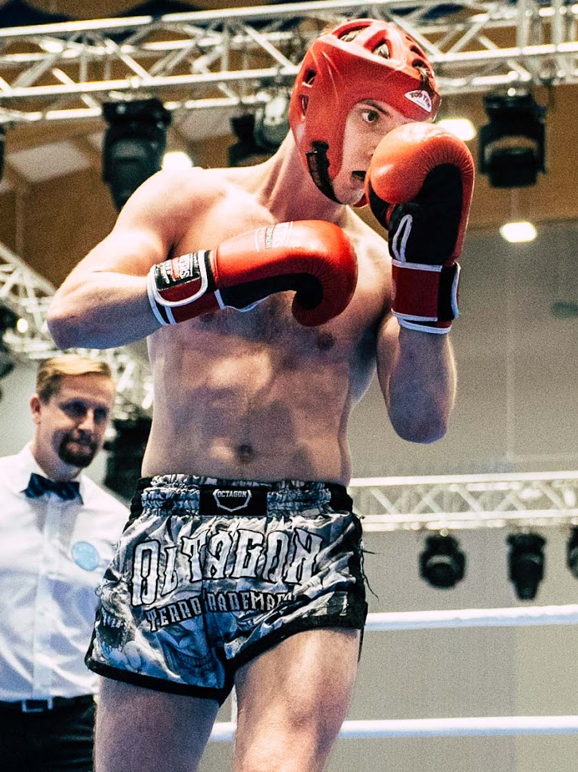
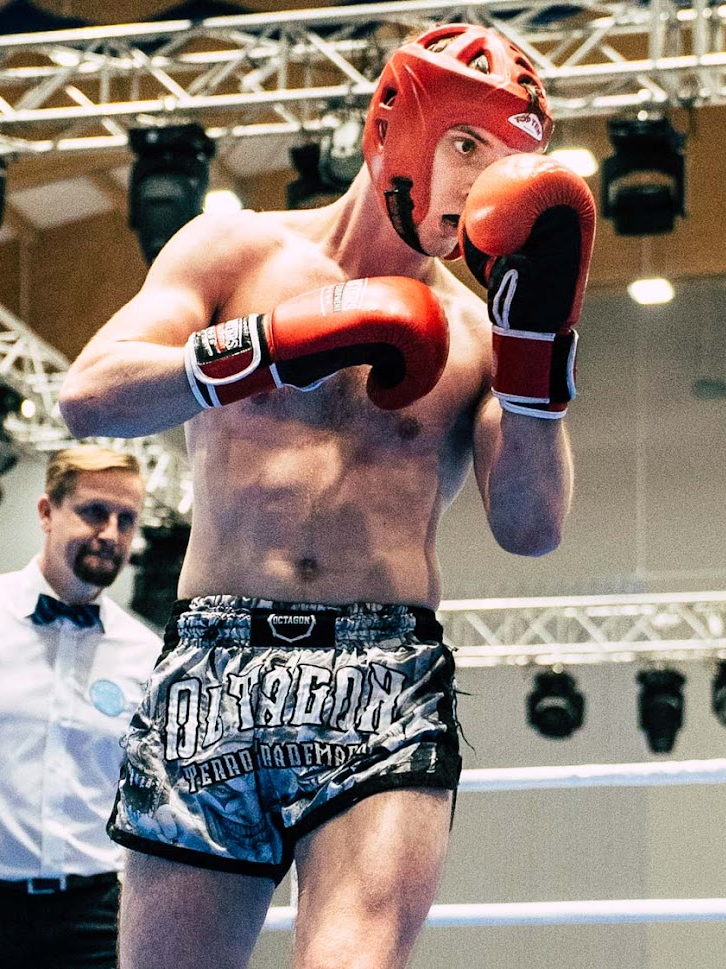

NA BLOGU ZNAJDZIESZ :
 


Witaj na moim nowym lifestyleowym blogu - MrBlog!
Jestem niezwykle podekscytowany, że mogę Cię zaprosić do tego wirtualnego miejsca, w którym będziemy razem odkrywać świat podróży, przygód i fascynujących wycieczek. Na MrBlogu znajdziecie szeroką gamę artykułów dotyczących podróży, od malowniczych miejsc na całym świecie, przez porady praktyczne dotyczące organizacji podróży, po inspirujące historie o ludziach i kulturach, które spotkamy w drodze. Jednak moje zainteresowania nie kończą się na podróżach. Będziemy również poruszać tematy związane z walką, dzieląc się informacjami o różnych stylach walki, technikach i przykładami inspirujących osób, które znalazły swoje powołanie w świecie sportów walki. Niezależnie od tego, czy jesteście zapalonymi podróżnikami, entuzjastami sportów walki, czy po prostu ciekawymi świata, MrBlog ma na celu dostarczanie wartościowych treści i inspiracji dla wszystkich czytelników.
Mistrzostwa Polski Low-Kick 2023

Pierwszy do ringu wszedł Marek Rogórz. Nasz reprezentant rywalizował w jednej z najliczniej obsadzonych kategorii wagowej do 71 kilogramów. Mistrzostwa Polski Low Kick 2023 nie były dla niego całkowitym debiutem. Wcześniej Marek miał już okazję startować w kickboxingu podczas turniejów mniejszej rangi. Jak się można było spodziewać zmagania w powyższej kategorii rozpoczęły się już w piątek od walk eliminacyjnych. Pierwsze starcie cechowało się dużą dynamiką. Rywale naprzemiennie wymieniali się seriami ciosów i kopnięć. Gdyby nie ciągłe problemy ze sprzętem, można by je zaliczyć do bardzo widowiskowych. Na kartach punktowych zawodnik Punchera Wrocław przeważał. W drugiej rundzie obydwaj przeciwnicy otrzymali ostrzeżenia. Oponent miał chwilę zrywu, za które otrzymał dużo punktów. Jednak z całą pewnością jego działania nie były tak wyraziste, aby odwrócić przebieg walki. Trzecia odsłona również należała do Rogórza. Był on precyzyjniejszy i częściej trafiał. Jednakże dla sędziów, z których każdy oglądał z pewnością inną walkę, to nie wystarczyło.